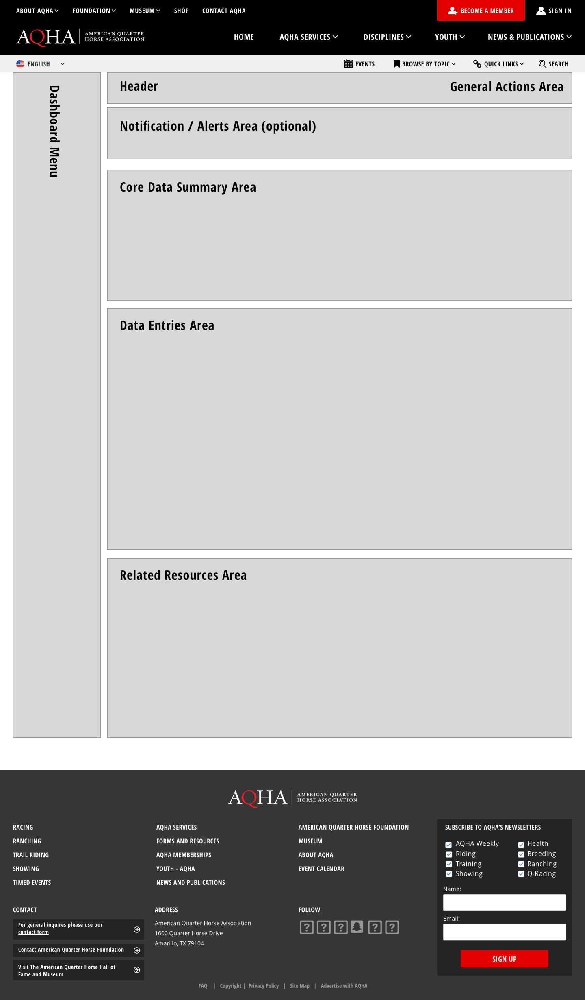

Goal
A completely new online membership information, record library, and transactional portal for AQHA members.
Technical requirements
Built on Liferay Portal only for Desktop.
1. Define user profiles
Based on the previous user research and the information that would be available on the portal, we created four different user profiles.
Each profile would be able to access relevant information related to them. An AQHA Member can be a mix of these profiles, that’s why we designed a user flow with a “super-user” in mind, to adjust to a reduced timeline.
Key member segments
Member
Basic membership profile, they are not necessarily the owner of a horse or a participant of events.
Owner
Member with at least one horse registered under its name; they should be able to keep an inventory of registered horses, sign up horses to an event, and receive reports of their performance.
Breeder
Members whose main job is to breed, raise, and sell horses; they need to keep track of their performance even after they have transferred ownership.
Showing
These Members participate mainly in events that showcase different skills of a horse; they need to be able to keep track of shows, points earned, leveling, and awards.
Racing
Members that are actively participating in horse racing; they need to access racing calendars, leadership boards, money earned, and awards.
2. Wireframe
Following the established pattern for the AQHA portal, we created a basic wireframe that the front-end team could follow to develop a flexible template for all profiles.
Each section would be feed with some standard data and the user’s information according to their profile.
Master template
3. Mockups
The final design is a modular concept where each page will transform according to the user’s profile. These pages will be able to evolve in time as more services are available on the portal.